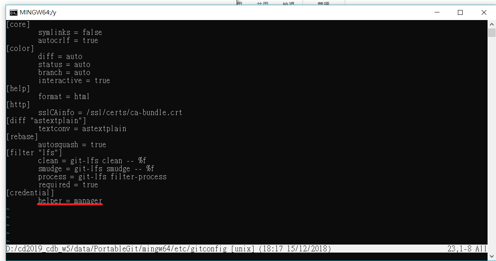

虛擬主機配置與設定 <<
Previous Next >> 小彈出窗及亂數產生器
倉儲內容改版
git status - 查看改版後尚未推送前的資料。
git add . - 將改版後的資料拍快照。
git commit - 將快照資料展開，準備推送。
git commit -m "message" - 同git commit 功能，但可在""中輸入改版訊息。
git push - 推送至遠端Github倉儲。
git pull - 若在遠端倉儲進行了變更，但因為近端沒有變更到所以在推送時出現小錯誤，可藉由此指令將遠端更新資料載入近端，即可進行推送。
若在校外無法使用校內proxy時，請將porxy設定加上"#"表示為註解，以免無法推送。

內建設定的helper = manger, 當使用 git push 時內建會跳出讓使用者輸入帳號密碼的對話視窗, 輸入帳號密碼後, 該資料將會儲存於操作系統中,因此須將此刪掉以免資料外洩及誤用他人帳的帳號。

https://www.youtube.com/watch?v=HZTn_KjqBZg&t=3s
虛擬主機配置與設定 <<
Previous Next >> 小彈出窗及亂數產生器